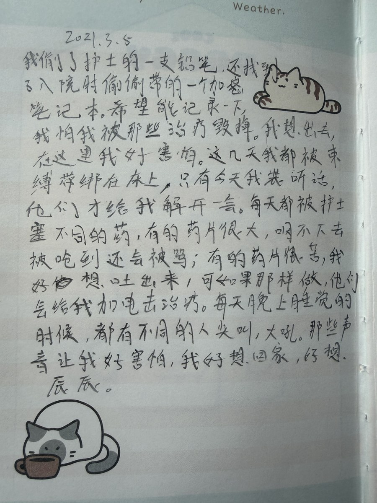
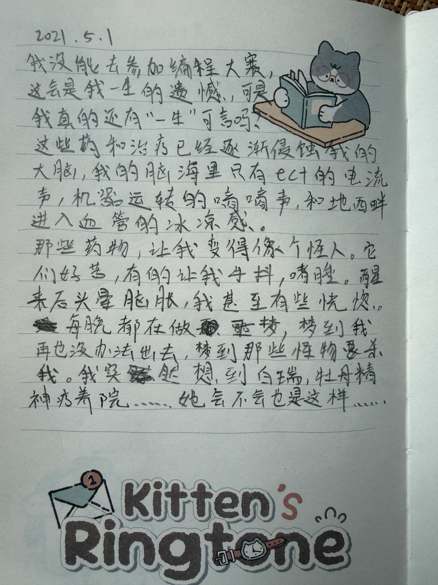
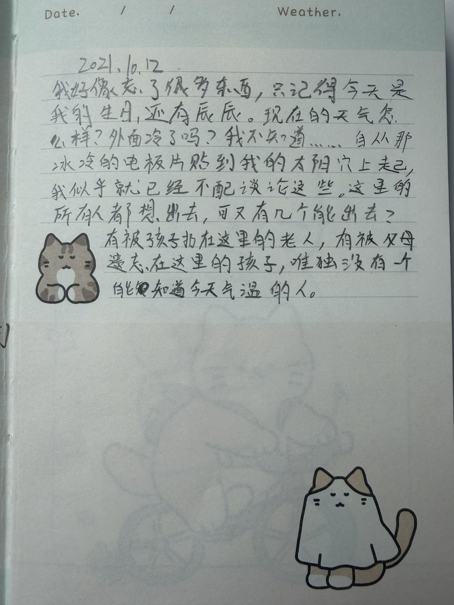
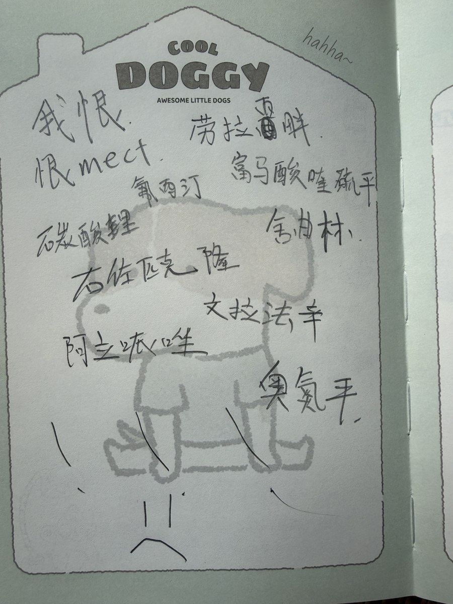
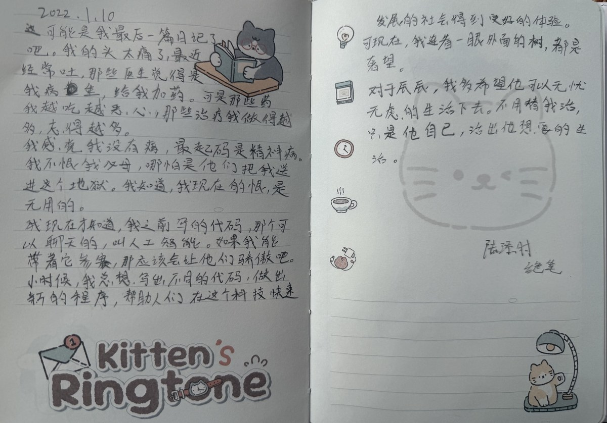
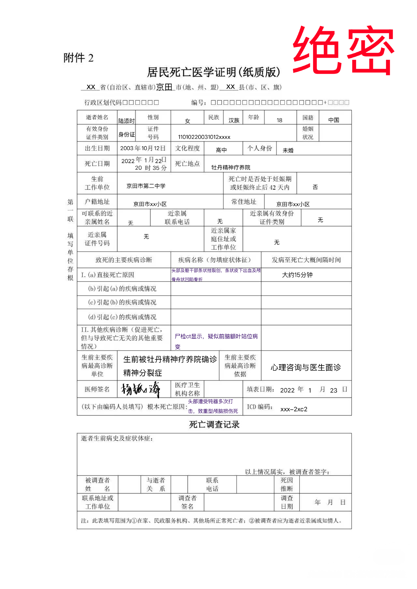
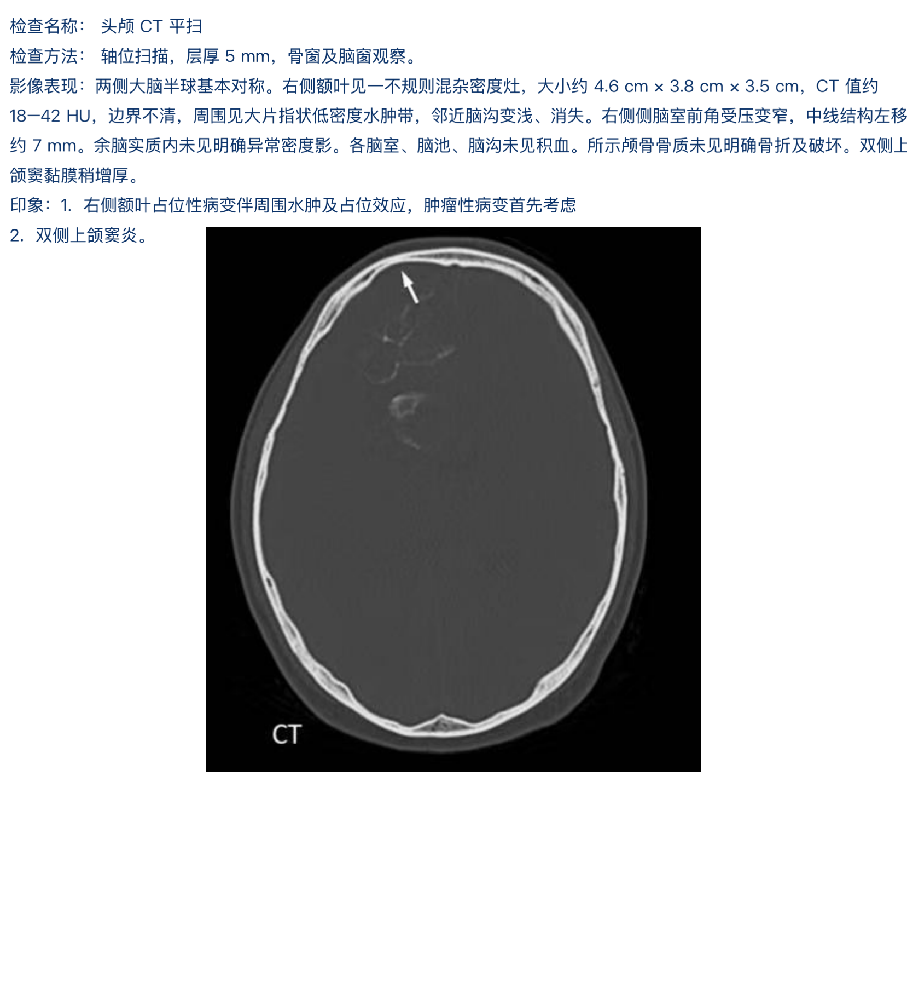
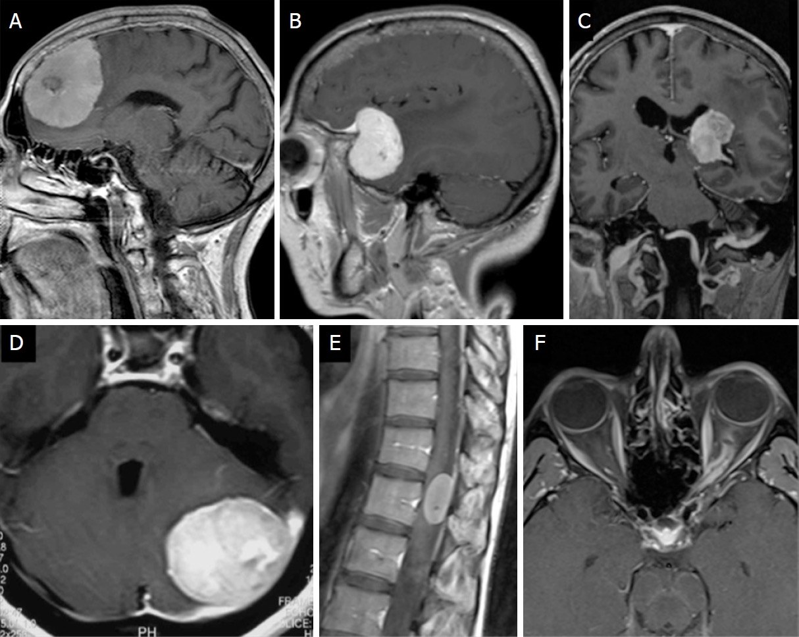
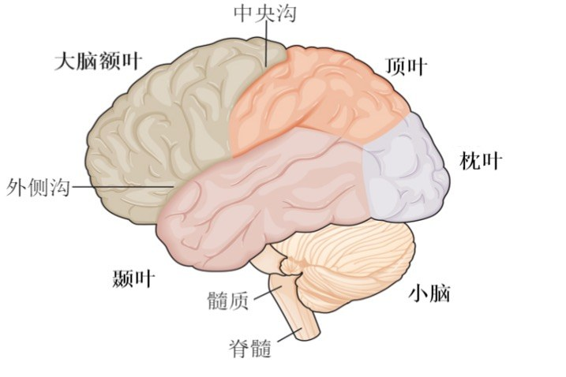

CASE FILE · JINGTIAN
你是一个刚入职京田市公安局的警察，叫罗鑫，26岁。你偶然听说警局内有个谜案，但警局封锁了一切消息，只知道案件与一个叫陆添时的女孩有关。
你对这个案子很好奇，所以经常在网上搜索，却始终没有找到什么线索。直到有一天，你收到了一封邮件。发件人是一个刚刚结束高考的男孩，叫陆添辰……
你是一个刚入职京田市公安局的警察，叫罗鑫，26岁。你偶然听说警局内有个谜案，但警局封锁了一切消息，只知道案件与一个叫陆添时的女孩有关。
你对这个案子很好奇，所以经常在网上搜索，却始终没有找到什么线索。直到有一天，你收到了一封邮件。发件人是一个刚刚结束高考的男孩，叫陆添辰……
京田市公安局 · 本地用户





用户会话已恢复
此文件夹已加密。
此照片图库已加密。
目标：参加 2021 年京田市青少年编程比赛。
三月：把查询和路线部分做稳定。
四月：测试、修 bug、准备现场演示。
五月一号：比赛。
这次想认真做完。白瑞以前说过，比赛的时候不要只想着“技术有多难”，要让评委一眼看懂这个东西为什么有用。
如果真的能去比赛，希望能拿一个不错的名次。
今天在学校编程老师居然夸我了！全校都知道，李老师是一个灭绝师太。可是，在我给她看我新做的游戏代码时，她居然笑了。
还说：“这种大规模 GI + Nanite 类几何，是连大厂编程人员都要学好久的。”
我这算是被认可了吗！好高兴！
今年生日又是这样。。。
但好在辰辰送了我一块榛子巧克力。
今天是辰辰生日，我用自己攒的压岁钱送了他一个玩具。
前几个月他就说想要这个玩具，爸妈只觉得小孩不会珍惜玩具，没必要买。但我知道，辰辰是一个会珍惜东西的孩子，特别是他喜欢的东西。
看着他高兴的笑容，我觉得一切都值得。
今天我给白瑞发消息，就是那个编程大神。她前几天刚获奖，最近却突然消失了。
我怀疑她父母真的把她送到医院了，而且还是普通的医院。我甚至去警察局问了，他们一开始直接把我打发出来，说无关人员不能乱报警。
我继续坚持，说白瑞和我有关系，是我的朋友，我需要知道她是不是安全。他们没办法，把我带到了局长办公室。
局长和我说，白瑞很安全，只是去医院做正常检查。我感觉不对劲，还想继续问。局长明显有些不耐烦，只说：“公安会确保人民的安全，这些事不需要你多问。”
我看着他桌上摆着的檀木和金丝楠木摆件，突然意识到，这可能不是我能继续调查的事。
我最后还是走了。
但离开的时候，我瞥到局长电脑上打开着一个网站。
牡丹精神疗养院。
今天我做出了一个神奇的工具。
可以聊天，也可以问问题。只要把问题打字过去，对面就会结合网络信息回复。
现在还很笨，有时候会答一些完全不相关的东西，而且速度也慢。但如果继续改，说不定以后真的能像和一个人聊天一样。
不知道这种东西应该叫什么。
今天辰辰上中学了！我真的好高兴，看着他从一个小孩，长到现在，我好欣慰。
前几天他还问我：“如果自己在中学被欺负怎么办？”
看着他担心的眼神，我笑了笑，说：“那姐姐去保护你。”
我说完，他总算是不担心了。
是啊，在他需要帮忙的时候，我一定会保护好他，就像小时候他保护我那样。。。
榛子巧克力是以可可制品与榛子为主要原料制作的甜食，常见形态包括夹心巧克力、块状巧克力以及使用榛子酱调和的巧克力制品。榛子经过烘烤后具有明显坚果香气，与巧克力风味兼容度较高，因此被广泛用于甜品、烘焙与零食制作。
共 6 个词条
低筋面粉450克、黄油100克（BUTTER）、糖粉230克、全蛋3个、小苏打1克、榛子或夏威夷果若干。
黑巧克力或白巧克力、巧克力针、坚果碎、椰丝等。
1、黄油放在室温下回软，加糖粉打发。
2、鸡蛋一个个加入，打发。
3、面粉与小苏打混合后，拌入 2，揉成面团，分成小份，包入榛子，搓成圆球。烤箱预热至165摄氏度，烤25分钟。
4、巧克力隔水融化备用。
5、烤好后放凉，外表沾一层巧克力（黑巧克力或白巧克力），再沾一层椰丝或巧克力针等即可。
三者最明显的区别在于榛子的处理方式。榛子巧克力可以直接加入完整或切碎的烘烤榛子，也可以加入榛子糊；榛子酱则通常将坚果充分研磨，使油脂释放，形成顺滑质地。
未经烘烤的榛子香气相对温和。适度烘烤后会产生更明显的焦糖、坚果和烘焙香，与可可的风味更容易融合。
准备牛奶 250ml、黑巧克力 35g、榛子酱 1 大匙。将牛奶小火加热，加入切碎的黑巧克力搅拌至完全融化，再加入榛子酱搅匀。
喜欢浓郁口感可减少牛奶用量；偏甜时可加入少量糖或使用牛奶巧克力。饮用前可撒少量可可粉或碎榛子。
榛子属于树坚果类食品。对树坚果过敏的人群应关注巧克力、饼干、坚果酱及烘焙食品的配料表。
即使产品本身配方中没有榛子，如果与含坚果食品共用生产线，也可能在标签上出现“可能含有坚果”的提示。
京田市青少年编程中心面向全市中学生开展算法、创意编程与科技创新活动，并承办京田市青少年编程竞赛及相关选拔活动。
提供基础算法、程序设计与项目实践。
举办年度总决赛与主题挑战赛。
鼓励学生将想法转化为实际作品。
连接学校、学生与指导教师。
4月28日，2019年京田市青少年编程总决赛在市科技馆举行。来自全市多所中学的24名选手进入最终赛程，经过现场算法测试、项目展示与答辩环节，16岁的白瑞获得本届比赛总冠军。
白瑞在决赛中提交的作品为《城市交通流量优化模拟系统》。评审组认为，该项目在数据处理、模型结构和实际应用思路上完成度较高，在同年龄组选手中表现突出。
指导教师介绍，白瑞对程序设计与算法具有很强的理解能力，学习新知识的速度很快，在此前数轮选拔中也始终保持较稳定的成绩。
赛后接受采访时，白瑞表示：“编程对我来说，是一种理解世界的方式。我希望以后能做出真正有用的东西。”
本次赛事由京田市教育部门指导，京田市青少年编程中心承办，旨在发现和培养本市青少年的科技创新能力。
经过线上初赛与现场复赛，本届大赛共有24名选手进入年度总决赛。决赛将于4月28日在京田市科技馆举行，比赛内容包括算法测试、项目演示及评委答辩。
入围选手请于比赛当日上午8:30前完成签到，并携带学生证及参赛确认函。
本次挑战赛面向京田市在校中学生，以“让技术改善城市生活”为主题。参赛作品可围绕交通、环保、公共设施、校园服务等方向展开。
比赛鼓励个人或两人组队参赛，作品须为原创，并在现场完成演示与答辩。
为期两周的暑期算法训练营于本周结束。来自全市多所中学的120名学生参加了基础算法、数据结构与项目实践课程。
中心将在秋季继续开放进阶课程与赛事辅导活动。
邮箱：competition@jtyouthcode.cn
电话：0871-6628 4106
工作时间：周一至周五 09:00–17:30
地址：京田市科创路28号青少年科技活动中心4层
邮箱：office@jtyouthcode.cn
电话：0871-6628 4090
参赛选手与指导教师可使用中心账号登录，查看报名信息、比赛通知和历史参赛记录。
参赛选手：白瑞 组别：中学组
参赛作品：《城市交通流量优化模拟系统》
项目通过模拟不同时段、道路节点与车流密度数据，对信号灯配时及拥堵分流方案进行动态调整。评审记录显示，该作品在数据处理、模型结构与现场答辩方面表现突出。
本次总决赛记录于2019年5月1日完成成绩确认。相关证书、作品版本及赛事文件已进入历史归档。
以精神专科诊疗为基础，提供门诊评估、住院观察、心理支持、物理治疗与康复服务。
因职工系统账号迁移，自即日起院内职工登录账号统一调整为：姓名全拼@mudan.com。原账号将逐步停止使用，请使用新账号登录“我的”页面。
心理咨询科将增加工作日下午咨询时段，住院患者家属会谈由病区统一协调安排。
本次培训面向精神科病区、麻醉协作及物理治疗相关工作人员，重点复核术前评估与治疗记录流程。
普通住院病区探视实行预约登记，特殊观察患者的探视安排以主管医师评估结果为准。
急性情绪与行为问题可由家属陪同至院评估，未成年人办理住院手续须由监护人完成相关登记。
围绕压力应对、家庭沟通与出院后的持续支持开展系列会谈。
围绕治疗前评估、围治疗期观察与病历记录规范开展院内培训。
进一步完善青少年情绪、行为与应激相关问题的短期观察服务。
患者由家属陪同入院。入院时情绪紧张，对住院安排明显抵触，多次要求离院，对医护询问配合欠佳。查体及精神状态检查过程中回答简短，部分问题拒绝作答，并反复表示“自己没有病”“不需要住院”。
家属述患者近数月情绪变化明显，易激惹，偶有无故发脾气、摔砸物品及与家人争执行为；近期交流减少，情绪波动加重，家属认为其行为较既往存在明显异常。
诊断意见：结合家属提供的病史、近期行为改变、情绪及交流状态，以及入院后的观察表现，初步诊断为精神分裂症，建议住院继续观察并进行系统治疗。
| 项目 | 医嘱 / 计划 | 备注 |
|---|---|---|
| 药物治疗 | 奥氮平口服，依据症状与耐受情况调整 | 抗精神病治疗 |
| 对症治疗 | 必要时短期使用镇静、抗焦虑药物 | 按需医嘱 |
| 住院观察 | 封闭病区继续观察情绪、行为及治疗配合情况 | 加强巡视 |
| 物理治疗 | 拟行 MECT（改良电抽搐治疗） | 由雷青泽主任评估后安排 |
患者目前治疗配合度低，疾病认识不足，单纯口服药物治疗依从性预计欠佳。考虑症状进展及住院期管理需要，建议药物治疗基础上联合 MECT，尽快稳定精神行为症状。继续观察治疗反应并根据病情调整方案。
主治医师：雷青泽 记录日期：2021年3月9日
张又英，原牡丹精神疗养院心理咨询师，接受过系统的临床心理咨询与危机干预训练，主要负责住院患者个体心理咨询、家属沟通、情绪支持及康复阶段心理评估。
任职期间参与青少年与成年患者的支持性心理治疗，并协助精神科医师进行住院期心理状态观察、家庭关系评估及出院前适应性指导。擅长处理家庭冲突、应激反应、焦虑情绪及住院适应问题。
2021年5月5日因个人原因办理离职手续，此后不再承担本院临床及咨询工作。
牡丹精神疗养院是京田市精神专科疗养院，承担着医疗、教学、科研、预防、社会服务等。医院创建于2016年。本院积极向外发展，在鸭梨国际精神委员会获得大力支持，并获得香蕉治疗奖、无抽搐电休克治疗奖和特色心理治疗奖。
疗养院是雷青泽院长独立开设的一所私立疗养院，有着京田市重点实验室，也是京田市心理卫生委员会的依托单位。
在普通精神科基础上，发展出老年精神科、儿童精神科、心理咨询科、无抽搐电痉挛治疗科等特色化诊疗团队，并开设24小时精神科急诊和住院治疗服务。
疗养院位于京田市东郊静养区，主要服务对象包括存在情绪障碍、睡眠障碍、焦虑抑郁、应激相关问题、行为失调及需要进一步住院观察的青少年与成年患者。
我们有着特色化的治疗系统，对于每个入院的患者，都会以医生面诊和家属说明为基础，给每一个病人一份定制的治疗方案。
围绕青少年住院患者与家属沟通需求，增加工作日下午预约时段。
院内精神科、麻醉协作及护理人员参与本次流程培训。
面向患者家属开展睡眠管理、压力识别及情绪沟通知识介绍。
新增入院面谈、家属说明与住院期行为观察记录项目。
针对老年患者常见睡眠与情绪问题提供联合评估服务。
持续推进住院患者家属沟通、康复支持与出院后适应工作。
精神专科综合诊疗、住院期评估、疑难个案会诊及物理治疗方案。
查看介绍 ›焦虑抑郁、睡眠障碍、应激相关问题及住院随访。
查看介绍 ›个体心理咨询、家属会谈、情绪支持及康复阶段心理干预。
查看介绍 ›老年情绪障碍、认知功能评估及睡眠问题的综合诊疗。
查看介绍 ›儿童青少年情绪、行为与学校适应问题的住院评估。
查看介绍 ›精神科物理治疗、围治疗期评估与住院患者状态观察。
查看介绍 ›一个混进医师介绍页面的作者彩蛋。
查看介绍 ›长期从事精神科住院病区诊疗工作，主要负责焦虑、抑郁、睡眠障碍及应激相关问题的评估、药物治疗与出院后随访。
临床工作重视症状变化和患者日常功能恢复，并参与住院病区的综合治疗方案讨论。
主要承担个体心理咨询、支持性心理治疗及家属会谈工作，帮助患者改善情绪识别、压力应对和家庭沟通。
参与住院患者康复阶段的心理支持，并根据需要与精神科医师共同完成阶段性评估。
雷青泽，现任牡丹精神疗养院院长，长期负责院内医疗管理、危重个案评估与住院诊疗统筹工作。从事精神专科临床多年，在复杂情绪障碍、青少年心理行为问题及急性期精神症状处理方面积累了丰富经验。
雷青泽主任强调“快速评估、及时干预、稳定优先”的治疗理念，擅长根据患者病情变化组合药物治疗、心理支持与物理治疗方案。对于症状进展快、常规治疗反应欠佳或急需控制严重精神症状的患者，其尤其重视 MECT（改良电抽搐治疗）在急性期综合治疗中的应用。
在院内临床工作中，雷青泽主任多次承担疑难住院个案会诊与物理治疗方案制定，并负责院内 MECT 相关医疗流程与质量管理。
长期从事老年精神卫生临床工作，主要负责老年情绪障碍、睡眠问题及认知功能变化相关的评估与治疗。
参与老年住院患者综合诊疗与家属沟通，重视共病情况和日常生活功能变化。
主要负责儿童青少年情绪、行为、应激及学校适应问题的门诊和住院评估。
临床工作包括患者面谈、家属说明、住院期行为观察及出院后随访建议。
主要承担精神科物理治疗相关的术前资料复核、围治疗期状态观察与治疗后随访。
参与院内 MECT 业务培训及治疗流程记录规范工作。
充数的，，，其实想分享一下我做mig的感想。整个游戏文案百分之八十是我自己写的，谜题和策划也是我自己来的。让ai辅助做代码和一些无关的文案填充。而且整个文案我只用了备忘录来写，只能说文思泉涌，忘了用专业软件。但其实备忘录也很好用啦。总之，希望大家接下来玩的开心！
承担常见精神与情绪问题的门诊评估、住院观察、药物治疗与病情随访。
面向青少年情绪、行为、应激与学校适应问题，开展住院评估及家属会谈。
提供老年情绪障碍、睡眠问题及认知功能变化相关的专科评估与管理。
开展个体心理咨询、支持性心理治疗、家属会谈及康复阶段心理支持。
负责 MECT 相关评估、治疗流程协调及围治疗期观察工作。
提供24小时精神科急诊评估、住院收治及急性期状态观察服务。
精神科医师根据患者症状、病程、既往用药反应与住院观察结果制定个体化治疗方案，并定期评估疗效与不良反应。
通过个体咨询、支持性心理治疗及必要的家属会谈，帮助患者改善情绪表达、压力应对及家庭沟通。
MECT（改良电抽搐治疗）是在麻醉与肌松条件下实施的物理治疗方式。适用情况需由精神科医师结合病情进行评估，并依照院内流程完成风险告知与相关手续。
职工请使用院内账号登录。
患者由父母送至牡丹精神疗养院。家属称患者长期沉迷电脑及网络，对限制上网表现强烈抵触，希望院方对其“进行纠正”。入院后患者多次明确要求离院，并对院方安排的治疗存在明显抗拒。
病区记录显示，患者在多次治疗过程中存在拒绝配合、哭闹、试图离开治疗室等情况。后经院内集体会议讨论，认为原有治疗“力度不足”，决定提高干预强度。
因家属所述“网瘾”问题入住牡丹精神疗养院，主治医师雷青泽。
院内记录显示，自该日起进入高频 ECT 治疗阶段。治疗频率调整为隔日一次。
持续记录患者“不配合治疗”。院内会议纪要认为患者抵触明显，决定继续并加强治疗方案。
治疗后患者出现持续性抽搐，随后发展为持续性癫痫状态。抢救记录显示症状未能有效控制。
死亡时间：2019年7月18日。
院内死亡记录记载：患者在接受治疗后出现持续性癫痫，后经抢救无效死亡。该病例随后被转入限制访问档案，普通职工账户无权查看完整记录。
JINGTIAN PUBLIC SECURITY BUREAU
围绕中小学、培训机构及周边商圈开展治安巡查、交通疏导和隐患整治。
对大型商业综合体、旅馆业及物流寄递等重点场所开展节前排查整治。
组织社区、校园与企业多场景宣传，增强群众识骗防骗能力。
围绕重点街区、交通枢纽和校园周边部署警力，同步开展安全提示、反诈宣传和窗口服务优化，进一步提升群众办事便利度和社会面见警率、管事率。
民警走进学校和社区，通过案例讲解、互动问答和实操演示等方式开展防诈、防欺凌、交通安全与自我保护宣传，持续织密校园安全防线。
结合社会治安形势和公共安全需求，围绕旅馆业、寄递物流和重点单位开展常态化检查督导，压实主体责任，推动形成协同共治格局。
围绕警务公开、事项办理、证照服务和咨询反馈等内容，不断完善线上线下服务指引，提升群众获取信息与办理业务的准确性、便捷性和透明度。
JINGTIAN PUBLIC SECURITY BUREAU
为进一步提升全市社会面治安防控效能，切实回应群众对夜间出行、重点街区秩序和便民服务体验的关注，京田市公安局近期持续统筹特巡警、交警、派出所及社区警务力量，在商圈、交通枢纽、校园周边、夜市和重点公共场所开展常态化巡逻巡查。工作中坚持显性用警、动中备勤、快速处置，通过高峰时段定点值守与低峰时段机动巡控相结合，提高见警率、管事率和快速反应能力。
在强化社会面巡防的同时，全市公安机关同步推进便民服务优化。户政、交管等窗口根据群众办事需求完善预约办理、材料预审、延时服务和特殊群体绿色通道，对高频事项进一步梳理办事材料和办理流程。基层派出所结合社区走访工作，及时收集群众对治安环境、交通秩序和公共服务的意见建议，并通过警民议事、联合巡查等方式推动问题解决。
反诈部门还联合社区、学校和企事业单位开展针对性宣传，围绕冒充客服退款、虚假投资理财、刷单返利等高发骗局进行案例讲解和风险提示。京田市公安局有关负责人表示，下一步将继续深化巡防、服务、宣传一体化机制，进一步推动警务资源下沉基层，以更精细的治理和更便捷的服务持续提升群众安全感和满意度。
JINGTIAN PUBLIC SECURITY BUREAU
JINGTIAN PUBLIC SECURITY BUREAU
为进一步维护校园及周边治安、交通秩序，保障广大师生上下学期间人身安全，京田市公安局决定在全市中小学、幼儿园、培训机构及周边重点路段开展校园周边秩序整治专项行动。行动期间，各属地派出所、交警部门和巡逻警力将根据上下学高峰时段增设护学岗，加强重点路口、公交站点、商铺集中区和人员密集区域的巡查值守。
此次专项行动重点整治占道经营、机动车违法停放、非机动车逆行及校园周边滋事扰序等行为，并同步对学校安防设施、门卫值守、视频监控和应急处置预案进行检查。公安机关还将联合教育、街道等部门开展安全宣传，推动学校、家庭和社会共同参与校园安全治理。对发现的突出治安隐患，将依法督促整改；对涉及违法犯罪的行为，将依法及时查处。
JINGTIAN PUBLIC SECURITY BUREAU
国庆假期临近，为切实做好节日期间社会面安全防范工作，京田市公安局于近日发布《关于国庆节前重点区域安全检查工作的通告》，并同步部署全市公安机关开展重点场所安全检查。此次检查覆盖大型商业综合体、旅馆业、校园周边、寄递物流、景区及大型活动场所，重点核查实名登记、消防通道、监控设备、安全值守和应急预案等制度落实情况。
市公安局要求各单位结合节日期间人流、车流和物流特点，提前开展风险排查，完善突发情况处置方案。对检查中发现的问题，将根据风险程度采取现场整改、限期整改和跟踪复查等方式闭环处置。公安机关提醒各经营单位严格落实主体责任，广大市民在人员密集场所注意保管个人财物，如发现可疑情况及时向现场工作人员或公安机关反映。
JINGTIAN PUBLIC SECURITY BUREAU
为便于社会公众准确理解《京田市无人驾驶航空器管理规定》，京田市公安局对实名登记、限制飞行区域、飞行报备和安全责任等重点内容进行说明。规定明确，无人驾驶航空器所有人和使用人应按照相关要求完成实名登记，并在飞行前确认设备状态、飞行环境和空域限制。机场净空保护区、党政机关驻地、重要基础设施、学校、医院和大型活动现场等区域，未经批准不得擅自开展飞行活动。
对于夜间飞行、超视距飞行、编队飞行以及在人群密集区域上空飞行等风险较高的活动，应按规定履行相应审批或报备程序，并采取必要的安全保障措施。公安机关表示，管理规定的目的并非限制正常使用，而是通过明确边界和责任，减少“黑飞”、扰序和侵害隐私等问题。具体条款可在“警务公开”栏目查阅。
JINGTIAN PUBLIC SECURITY BUREAU
为进一步规范旅馆业治安管理，提升住宿场所安全防范和服务管理水平，京田市公安局就《京田市旅馆业治安管理规定》有关内容向社会公开说明并听取意见。拟完善的内容主要涉及住宿实名登记、未成年人入住核验、视频监控资料保存、异常情况报告和从业人员安全培训等制度。
说明提出，旅馆经营单位应依法核验入住人员有效身份信息，不得以任何方式规避实名登记要求；对未成年人单独入住、身份信息异常以及其他可能涉及人身安全风险的情况，应加强核验并按规定处置。同时，旅馆应规范监控设备运行和资料保存，严格保护旅客个人信息，不得向无关人员泄露住宿记录。公安机关将根据公开反馈进一步完善相关条款后按程序发布实施。
JINGTIAN PUBLIC SECURITY BUREAU
为进一步增强学生安全防范意识和自我保护能力，京田市公安局近期组织辖区民警走进多所中小学开展“平安校园 安全同行”主题宣传活动。活动结合学生年龄特点，通过典型案例讲解、情景问答和互动演示等形式，围绕交通安全、防范电信网络诈骗、防欺凌、防拐骗以及紧急情况下如何正确求助等内容进行讲解。
在活动现场，民警还就学生日常使用网络和社交平台时可能遇到的风险进行提示，引导学生不轻信陌生网友、不随意泄露个人信息，对可疑链接和陌生转账要求保持警惕。学校教师和安保人员同步参与安全检查和应急演练。京田市公安局表示，将持续完善警校联动机制，常态化开展护学岗、校园周边巡逻和安全教育活动，共同营造安全有序的校园环境。
JINGTIAN PUBLIC SECURITY BUREAU
近期，京田市公安局结合社会治安形势和公共安全管理需要，对旅馆业、寄递物流、娱乐场所和重点单位开展常态化检查督导。检查中，民警重点查看实名登记制度、视频监控运行、消防通道、安全值守和异常情况报告制度落实情况，并针对发现的问题向经营主体提出整改要求。
公安机关在检查过程中同步开展法律法规宣传，指导从业人员规范履行安全管理责任，进一步提升发现风险、报告风险和处置风险的能力。对于能够现场整改的问题，要求立即整改；对需要一定周期完成的事项，明确整改期限并安排复查。市公安局表示，将坚持依法监管与服务指导并重，推动行业场所管理更加规范，减少各类治安隐患。
JINGTIAN PUBLIC SECURITY BUREAU
为进一步提升群众获取公安政务信息和办理相关业务的便利度，京田市公安局持续梳理警务公开、证照办理、户政咨询、交通管理和治安服务等高频事项，完善线上线下办事指引。对申请材料、办理流程、办理时限和常见问题进行统一整理，并在门户网站和服务窗口同步更新。
同时，市公安局推动窗口单位优化预约办理、材料预审和特殊群体帮办机制，对老年人、残障人士等确有需要的群众提供必要协助。对于群众通过网站、电话和窗口提出的咨询，将按照职责分工及时转办反馈。相关负责人表示，政务公开的重点不仅是“公开”，更要做到信息清楚、入口明确、流程易懂，让群众能够快速找到需要的服务内容。
JINGTIAN PUBLIC SECURITY BUREAU
7月26日，京田市公安局组织民警代表举行警徽宣誓仪式。仪式现场，全体人员面向警徽庄严宣誓，重温入警初心和职责使命。市公安局有关负责人在仪式上要求，全体民警进一步强化政治意识、纪律意识和责任意识，把忠诚履职体现在日常执法、服务群众和维护社会安全稳定的具体工作中。
活动结束后，各单位结合岗位实际开展交流学习，围绕规范执法、队伍建设和群众工作等内容进行讨论。民警代表表示，将以更加严格的标准要求自己，自觉遵守各项纪律规定，依法履职、文明执法，在基层警务工作中持续提升群众获得感和安全感。
JINGTIAN PUBLIC SECURITY BUREAU
1月10日，京田市公安局召开全市公安工作会议，总结上一年度社会治安防控、打击违法犯罪、公共安全管理和基层基础建设等工作情况，并对新年度重点任务作出部署。会议强调，要持续强化社会面风险排查和重点区域巡防，健全快速响应和部门协同机制，不断提升基层治理效能。
会议同时对规范执法、队伍建设和便民服务提出要求，强调各单位要严格落实执法责任制，进一步完善窗口服务流程和群众诉求办理机制。市公安局领导班子成员、各分局和有关业务部门负责人参加会议。
JINGTIAN PUBLIC SECURITY BUREAU
京田市公安局会同教育等部门持续推进平安校园建设，通过完善校园周边巡防、护学岗设置、安防设施检查和安全教育等措施，进一步强化校园安全防线。各属地派出所根据辖区学校分布和上下学时段特点，优化巡逻路线和警力安排，重点加强校门口、交通路口及人员集中区域秩序维护。
同时，公安机关定期组织民警进校园开展防欺凌、反诈、交通安全和应急避险宣传，指导学校完善门卫管理、访客登记和突发事件处置预案。对检查发现的安全隐患，联合相关部门推动限期整改并跟踪复查。
JINGTIAN PUBLIC SECURITY BUREAU
随着冬季临近，京田市公安局在全市范围部署开展冬季治安整治行动。行动重点关注夜间人员密集场所、商业街区、交通枢纽及重点行业场所，通过加强巡逻检查、隐患排查和重点时段值守，进一步提升社会面治安防控能力。
行动期间，各单位同步开展防盗、防骗、防火等安全宣传，对旅馆、寄递物流和娱乐场所落实实名登记、安全值守和监控管理情况进行检查。公安机关表示，将根据治安形势变化动态调整巡防力量，确保发现问题及时处置。
JINGTIAN PUBLIC SECURITY BUREAU
3月12日，京田市公安局局长杨振海带队调研城市公共安全工作，先后前往交通枢纽、重点商业区域和基层派出所了解巡防值守、应急处置和群众服务情况。调研中，杨振海听取有关部门工作汇报，并就重点区域风险排查、警力调配和联动处置机制提出要求。
杨振海表示，公共安全工作必须坚持预防在先、快速响应和协同处置，基层单位要及时掌握辖区治安动态，完善重点场所安全管理和突发事件应急预案。同时，要进一步规范执法流程，提升服务群众能力。
JINGTIAN PUBLIC SECURITY BUREAU
1月9日，京田市公安局举行警徽宣誓仪式。新任职干部和民警代表参加活动，并面向警徽庄严宣誓。活动旨在进一步强化职业荣誉感和纪律意识，引导全体民警牢记职责使命，严格规范公正文明执法。
仪式后，市公安局有关负责人围绕队伍建设、纪律作风和群众工作作出部署，要求各单位把规范执法和服务群众贯穿日常警务全过程，持续提升履职能力和工作作风。
JINGTIAN PUBLIC SECURITY BUREAU
12月30日，京田市公安系统召开干部任职通报会。根据组织安排，杨振海同志正式由副局长升任京田市公安局局长，全面主持公安局工作。通报会指出，杨振海同志长期在公安一线和综合管理岗位工作，政治立场坚定，业务经验较为丰富，在维稳处突、基层治理和队伍建设等方面均有较扎实的实践基础。此次任职，体现了组织对其工作能力和履职表现的认可，也对后续公安工作提出了新的更高要求。
会议指出，杨振海同志政治立场坚定，长期在公安一线和综合管理岗位工作，具有丰富的业务经验和较强的组织协调能力，在维护社会稳定、打击违法犯罪、推进公安改革和队伍建设等方面作出了重要贡献。希望他在新的岗位上继续发扬优良作风，团结带领全市公安机关，忠实履行新时代公安机关职责使命，为维护京田市社会大局稳定、保障人民群众安居乐业作出新的更大贡献。
杨振海身为刑侦专业，法医出身，可以更好的带领京田市公安局侦破案件。
杨振海同志在任职讲话中表示：“我非常荣幸成为京田市公安局局长，在这里我要感谢京田市人民，党和国家的信任。当然还有老朋友们的支持，比如第二人民医院的雷青泽医生，京泰集团的总裁谢敏，感谢你们！”
市公安局领导班子成员、各分局主要负责同志及民警代表参加会议。
JINGTIAN PUBLIC SECURITY BUREAU
为切实做好国庆节前社会面安全防范工作，京田市公安局自即日起在全市范围内组织开展重点区域安全检查行动。此次行动将围绕大型商业综合体、旅馆业、学校周边、寄递物流企业、危险物品存放场所及大型活动举办地等单位，重点检查消防通道畅通、监控设备运行、实名登记制度落实、从业人员安全培训和应急预案完善等情况。对发现的安全隐患，将依法责令限期整改；对拒不整改、整改不到位或存在严重风险隐患的单位，将依法采取进一步处理措施。
京田市公安局提醒各经营主体和从业单位，节日期间人流物流集中，必须切实增强底线思维和责任意识，严格落实主体责任，主动开展自查自纠，积极配合公安机关检查指导，共同维护节日期间社会秩序安全平稳。
JINGTIAN PUBLIC SECURITY BUREAU
为进一步提升群众识诈、防诈、反诈能力，京田市公安局决定于8月下旬在全市范围内开展“夏季反诈宣传周”活动。活动将综合采取社区集中宣讲、校园专题课堂、企业上门提醒、商圈流动宣传和网络直播答疑等多种方式，重点围绕刷单返利、虚假投资理财、冒充熟人借款、冒充客服退款和冒充公检法等高发诈骗类型开展案例讲解与风险提示。同时，反诈中心将联合银行、通信运营商和街道网格力量，对重点易受骗群体开展定向提醒和回访。
公安机关提醒广大市民，凡遇到陌生链接、可疑来电、要求转账汇款或索要验证码的情况，务必提高警惕，做到不轻信、不转账、不泄露。如遇疑似诈骗，请第一时间拨打110或反诈专线进行咨询核实。
JINGTIAN PUBLIC SECURITY BUREAU
JINGTIAN PUBLIC SECURITY BUREAU
为维护低空空域秩序，保障公共安全和人民群众人身财产安全，京田市公安局会同有关部门制定本规定。凡在本市行政区域内从事无人驾驶航空器飞行、训练、表演、航拍、巡检等活动的单位和个人，应当遵守国家相关法律法规，并按照本规定履行实名登记、飞行申报、安全评估和设备维护义务。对达到一定重量标准或用于经营活动的无人驾驶航空器，应在规定期限内完成实名登记并按要求标识设备信息。
在机场净空保护区、党政机关驻地、重要基础设施、学校、医院、大型活动现场和法律法规规定的其他限制区域内，未经批准不得擅自飞行。进行夜间飞行、超视距飞行、编队飞行或者在人群密集区域上空飞行的，应当提前依法履行审批或报备程序，并采取必要的安全防护措施。无人驾驶航空器操作人员应具备相应知识和技能，不得酒后操控，不得利用飞行器实施窥探隐私、抛洒物品、干扰秩序等违法行为。
公安机关将会同交通、应急、城管等部门建立联合监管机制，对违法违规飞行活动依法调查处理；构成犯罪的，依法追究刑事责任。造成他人人身财产损害的，依法承担相应民事责任。
JINGTIAN PUBLIC SECURITY BUREAU
为规范非机动车通行秩序，改善道路交通环境，保障行人及车辆通行安全，结合本市实际，制定本条约。电动自行车、自行车以及依法认定为非机动车的其他交通工具，应当按照规定在非机动车道内通行；未设置非机动车道的道路，应靠车行道右侧通行，并遵守交通信号、交通标志和交警现场指挥。骑行人不得逆向行驶、闯红灯、在机动车道内长时间占道行驶，不得牵引他人或扶身并行，不得在骑行过程中使用手持通讯设备。
对符合国家标准的电动自行车，应当依法办理登记上牌，保持制动、照明、反光装置齐全有效。任何单位和个人不得擅自改装车辆动力装置，不得加装影响安全的雨棚、座椅、货架或其他设施。共享单车运营企业应合理投放车辆，加强车辆维护和停放管理，避免挤占盲道、消防通道和公共空间。商圈、学校、地铁站等重点区域应划设集中停放点，引导群众规范停放。
公安机关交通管理部门将会同城管等部门加强宣传教育和执法管理，对多次违法、拒不改正或造成严重后果的行为依法处罚；情节严重构成犯罪的，依法追究刑事责任。
JINGTIAN PUBLIC SECURITY BUREAU
为加强旅馆业治安管理，维护住宿场所秩序，保障旅客和经营者合法权益，制定本规定。旅馆经营单位应依法取得相应许可，建立健全住宿登记、值班巡查、消防安全、突发事件处置和从业人员培训等制度。对所有入住人员，应按规定查验有效身份证件并如实登记上传住宿信息；对未成年人入住、团队入住、深夜集中入住和其他异常情形，应按要求加强核验，必要时及时向公安机关报告。
旅馆应在前台、走廊、出入口、电梯厅等重点区域设置符合标准的视频监控设备，并按规定期限保存监控资料，不得随意删除、篡改或向无关人员泄露。对住宿过程中发现的涉黄涉赌涉毒、携带危险物品、打架滋事、身份可疑以及可能危及他人人身财产安全的情形，旅馆从业人员应立即采取必要措施并及时报告公安机关。网络平台参与客房销售、预订和管理的，也应当配合落实实名登记和异常信息协查机制。
对未按规定落实实名登记、故意隐瞒异常情况、拒不配合公安检查或者存在重大治安隐患的旅馆经营单位，公安机关将依法责令整改并予以处罚；构成犯罪的，依法追究刑事责任。
JINGTIAN PUBLIC SECURITY BUREAU
| Z | H | Y |
| 1 | 0 | 0 |
| 0 | 1 | 0 |
每一行都从正确的门开始
INTERNAL AUTHORIZED ACCESS
姓名：杨振海
职务：京田市公安局局长
账户：yang.zh@jingtian-police.gov
历史档案：允许访问
加密音频：允许解密
内部评论：允许查看
当前预览环境未能执行自动检索。请返回后重新输入关键词。
‹ 返回内部首页系统检测到该录音文件属于绝密级内部附件。当前账号权限验证通过，可在本页临时播放。
系统已将你新上传的法医学档案以前两页只读影印方式载入。第 3 页为空白页，已不显示。


该条目设有独立密码保护。请输入访问密码后查看正文。
2016年7月1日，原京田市第二人民医院精神科副主任医师雷青泽正式辞去原院职务，并在京田市东郊设立个人精神专科医疗机构——“牡丹精神疗养院”。据相关备案材料显示，雷青泽自进入第二人民医院以来长期从事精神科临床诊疗、住院患者管理及部分物理治疗工作，曾参与多项院内精神心理疾病诊疗项目。此次离职后，他以个人医疗团队为基础，吸纳原有护理、康复及心理咨询人员，成立独立运营的精神专科医院。
牡丹精神疗养院位于京田市东郊山林区域，院区与城市中心保持一定距离，周围分布有低山、林地及自然水系。院方在开业介绍中称，选择此处主要考虑精神疾病患者在长期住院过程中对安静环境、规律作息及户外活动空间的需求。院区规划包括住院楼、门诊楼、心理咨询室、康复活动区和独立的物理治疗区域，并在外围设置封闭式步道及园林活动场地。院方宣传材料多次强调“自然环境与医学治疗并重”，认为远离城市噪声和高密度生活环境能够帮助部分患者稳定情绪、恢复睡眠与生活节律。
雷青泽在开业仪式上表示，传统综合医院精神科往往受到床位、空间和治疗周期的限制，而独立精神专科机构可以对患者进行更长期、更集中、更系统的住院管理。他提出，牡丹精神疗养院将以药物治疗、心理咨询、康复训练及物理治疗相结合的方式开展工作，并根据患者情况制定个体化住院方案。院方同时表示，将与本市部分医疗机构及相关单位建立转诊和协作渠道，以保证患者在出现躯体疾病或紧急情况时能够及时得到进一步医疗支持。
开业当日，院方未公布具体投资规模，仅表示医院建设、设备采购及前期人员配置已经完成。雷青泽本人正式辞去京田市第二人民医院职务后，将以院长身份全面负责牡丹精神疗养院的医疗管理与运营工作。该院自2016年7月1日起正式接收患者。
该附件原以加密形式保存。当前账户权限验证通过，系统已临时解密音频文件。
前脑额叶肿瘤通常指发生在大脑额叶区域的占位性病变。额叶位于大脑最前部，与计划、判断、注意力维持、情绪调节、语言组织、社会行为及部分运动控制密切相关，因此这一部位出现病变后，症状并不一定首先表现为剧烈头痛。部分患者在早期只会出现学习效率下降、反应速度变慢、工作安排混乱、性格变得易怒或冷漠、注意力不集中等表现，容易被误认为单纯疲劳、心理压力或青春期情绪变化。随着病灶增大、周围水肿加重或颅内压升高，患者才可能逐渐出现持续性头痛、清晨恶心呕吐、嗜睡、癫痫发作、一侧肢体无力，甚至出现明显的认知和行为改变。
额叶肿瘤并不是单一病种，临床上可能见于胶质瘤、脑膜瘤、转移瘤或其他来源的病变。医生通常需要结合病史、神经系统查体、头颅 CT、增强 MRI 以及必要的病理检查来综合判断其性质、范围与危险程度。治疗方案则会根据肿瘤位置、大小、生长速度、病理类型以及患者年龄和神经功能状态进行个体化制定，常见路径包括手术切除、放疗、化疗、靶向治疗及术后长期随访。


头颅 CT 检查速度快，常用于急诊筛查，适合初步判断是否存在明显占位、出血、水肿或中线结构移位；MRI 对脑组织软组织分辨率更高，更适合观察病灶边界、周围脑组织受累范围，以及病灶与语言区、运动区等重要功能区的关系。若影像提示额叶病变，医生还会根据情况安排增强扫描、血液检查或术后病理分析，以帮助确定肿瘤的性质与后续治疗思路。
| 年龄阶段 | 恢复 / 控制参考 | 临床观察要点 |
|---|---|---|
| 18 岁以下 | 约 62%–74% | 需结合病理类型、生长发育情况与长期神经功能随访，个体差异较大。 |
| 18–35 岁治愈率最高 | 约 76%–86% | 年轻患者总体恢复潜力较好，若病灶发现较早、能够规范治疗，预后通常优于其他年龄段。 |
| 36–55 岁 | 约 58%–72% | 需综合评估病变性质、是否侵犯功能区及术后辅助治疗反应。 |
| 56 岁以上 | 约 41%–60% | 常需更多关注基础疾病、耐受性及康复训练节奏。 |
前脑额叶肿瘤是指发生在大脑额叶区域的一类占位性病变总称，并不代表某一种固定病理。根据来源不同，可能包括胶质瘤、脑膜瘤、转移瘤及其他较少见的病变。额叶与计划、判断、人格、注意力、语言组织及随意运动密切相关，因此该部位病变常兼具“神经系统症状”和“行为认知改变”两类表现。
临床上，患者既可能出现头痛、恶心、呕吐、癫痫发作、一侧肢体无力等典型颅内占位表现，也可能先被家属注意到性格改变、做事缺乏条理、易怒或冷漠、学习工作能力下降。确诊通常依赖影像学检查和病理结果，治疗方案则与病理性质、大小、位置及功能区受累范围有关。
额叶常被视为大脑高级执行功能的重要区域之一，它参与控制冲动、安排计划、评估后果、调节情绪以及维持社会行为。当额叶受到肿瘤压迫，或周围出现明显水肿时，患者可能会表现出与过去截然不同的状态，例如突然易怒、大喊、摔东西、情绪低落，也可能变得冷漠、沉默、行动迟缓、对周围事物缺乏兴趣。
这类改变之所以容易被忽视，是因为患者本人有时并不会意识到自己“变了”，家属往往更先感受到“不像原来的他”。如果性格变化同时伴随持续头痛、反复恶心、癫痫、视力异常、记忆和学习能力快速下降，就需要排除神经系统器质性病变，而不能只从单纯心理因素解释。
头颅 CT 与 MRI 都可以用于评估颅内病变，但两者侧重点并不相同。CT 检查速度快、获取方便，适合急诊初筛，对明显占位、出血、骨性结构改变以及较重水肿有较高实用价值。若患者出现突发严重头痛、呕吐、意识变化或癫痫，CT 常常是第一步检查。
MRI 对脑组织软组织分辨率更高，更适合观察肿瘤边界、周围水肿、深部结构以及与运动、语言等重要功能区的关系。临床上，若 CT 提示额叶区域异常密度影或占位效应，医生通常还会建议进一步进行增强 MRI。需要注意的是，影像学只能提示病变性质，最终是否属于某类肿瘤、恶性程度如何，仍需结合病史与病理结果综合判断。
是否需要手术，取决于病变大小、位置、生长速度、影像学特征、病理倾向以及患者是否已经出现神经功能受损。对于多数能够安全切除、同时造成明显压迫或症状的额叶肿瘤，手术通常是重要治疗步骤：既能减轻占位和颅内压，也能取得组织帮助明确病理类型。
如果肿瘤靠近语言、运动等重要功能区，医生会在术前进行更细致的功能定位，并考虑术中导航、神经电生理监测等手段。对于高级别或不能完整切除的病变，术后常需进一步接受放疗、化疗或其他辅助治疗。少数体积小、性质稳定且暂时没有症状的病灶，也可能先进行密切影像随访，而不是立刻手术。
年轻人头痛最常见的原因仍然是偏头痛、紧张性头痛、睡眠不足、感染或情绪压力，并不能因为头痛就直接判断存在脑肿瘤。但如果头痛在数周或数月内逐渐加重，尤其是清晨更明显，同时伴随反复呕吐、视力变化、癫痫发作、一侧肢体无力、明显性格改变或学习能力突然下降，就应尽快就医。
医生通常会先进行神经系统查体，了解头痛模式、意识状态、肌力、反射和视野等情况，再根据风险决定是否需要头颅 CT 或 MRI。持续性神经系统症状不宜仅以“压力大”或“青春期情绪”解释，越是出现行为认知改变与反复呕吐并存，越应提高警惕。
额叶肿瘤手术后的恢复速度因人而异。除了切口愈合，患者还可能需要恢复注意力、记忆、计划能力、语言表达、情绪控制或肢体运动。年轻且术前神经功能较好的患者，往往更容易较快恢复日常活动；但如果病变本身侵及重要脑区、术前症状持续时间较长，或术后仍需放化疗，康复过程可能明显延长。
临床通常会根据患者具体困难安排物理治疗、认知训练、语言训练或心理支持，并通过定期 MRI 复查监测是否存在残余、复发或新的水肿变化。康复并不是单纯“多休息”就够了，它本身也是整个治疗链条里非常重要的一部分。
该账号的部分博文仅登录后可查看完整内容。
JINGTIAN MUNICIPAL PEOPLE'S GOVERNMENT
围绕公共服务、基层治理和年度重点项目进度进行专题调度。
进一步加强重点场所巡查、应急值守及部门协同处置机制。
面向应届毕业生集中提供岗位对接、政策咨询及公共就业服务。
优化受理、转办、反馈和回访流程，提高群众诉求办理效率。
会议要求持续完善行政监督机制，依法依规处理群众反映问题。
对重点路段、低洼区域及应急排水设备开展集中检查。
进一步压缩群众办事环节，推进事项“一窗受理”。
围绕家庭保护、学校保护、社会保护等内容开展普法宣传。
面向社会公开征集交通、教育、医疗及社区服务等方面建议。
JINGTIAN MUNICIPAL PEOPLE'S GOVERNMENT
依法反映问题，维护公共利益。举报信息将按照职责范围转交有关部门核查办理。
公职人员涉嫌违法违纪、滥用职权；行政机关及工作人员不依法履职；其他需要由市级监督渠道受理的实名或匿名线索。
建议说明涉及人员或单位、事件经过、发生时间及地点，并尽可能提供可核实的文件、图片、录音或其他证据材料。
任何单位和个人不得以任何形式打击、报复举报人。举报内容及身份信息按照规定严格管理。
请基于真实情况提交线索，不得故意捏造事实、伪造材料或借举报诬告他人。
JINGTIAN MUNICIPAL PEOPLE'S GOVERNMENT
请如实填写举报人、被举报人、举报事实及日期。提交后系统将对信息完整性进行核验。
罗鑫，你成功举报了那两个恶魔。你认为，无论是体系里多么大的人物，都需要为了正义试一下。你把所有搜查证据，包括牡丹精神疗养院全部信息，陆添时所有日记，陆添辰博客内容，杨振海与雷青泽录音，陆添时尸检报告等，全部打包发送给京田市人民政府。很快，特警和检察官分别包围了牡丹精神疗养院和京田市公安局。雷青泽因故意杀人罪，滥用职权等罪名，判处死刑，缓期两年执行，剥夺政治权利终身。杨振海因恶意包庇，贪腐等罪名，判处无期徒刑，剥夺政治权利终身。牡丹精神疗养院正式关停，里面的病人全部转到政府医院，重新做心理评估和治疗方案。
检察官和政府都感谢你的举报，并且给予陆添时失踪案画上句号。你回到家了，妈妈包了饺子，也知道了新闻。她眼底藏着一丝担忧，可脸上是慈祥的笑容，对你说：“鑫鑫，你是妈妈的骄傲。”
爸爸为了奖励你，给你买了最新的菠萝手机。虽然没有升职，加工资，但你知道你做了一件大事，一件正确的事。
几天后，你收到陆添辰的邮件。点击此处跳转邮件界面 →本页面内容纯属虚构，仅为游戏剧情与解谜设定。
评论